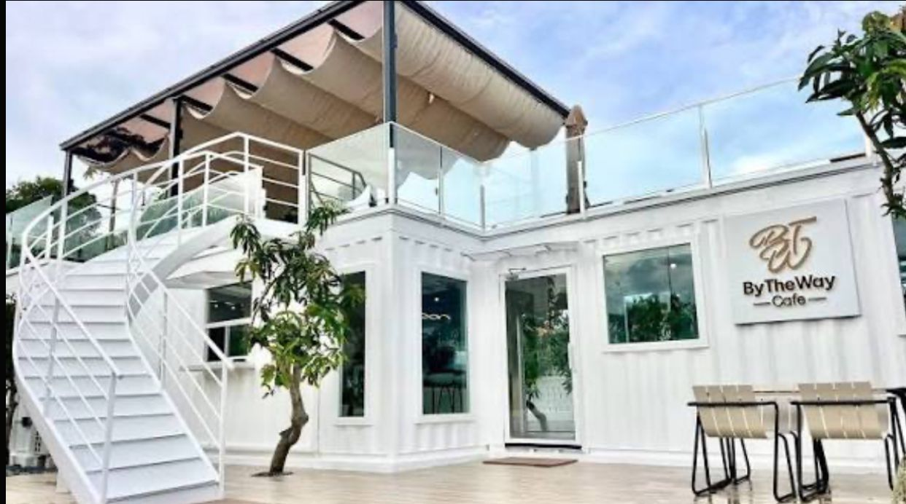
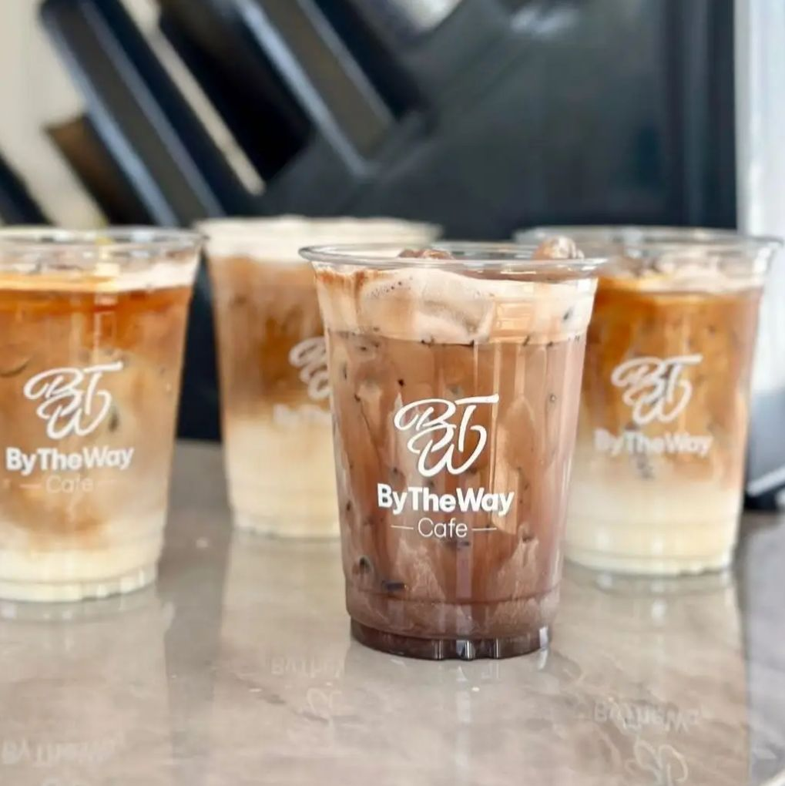
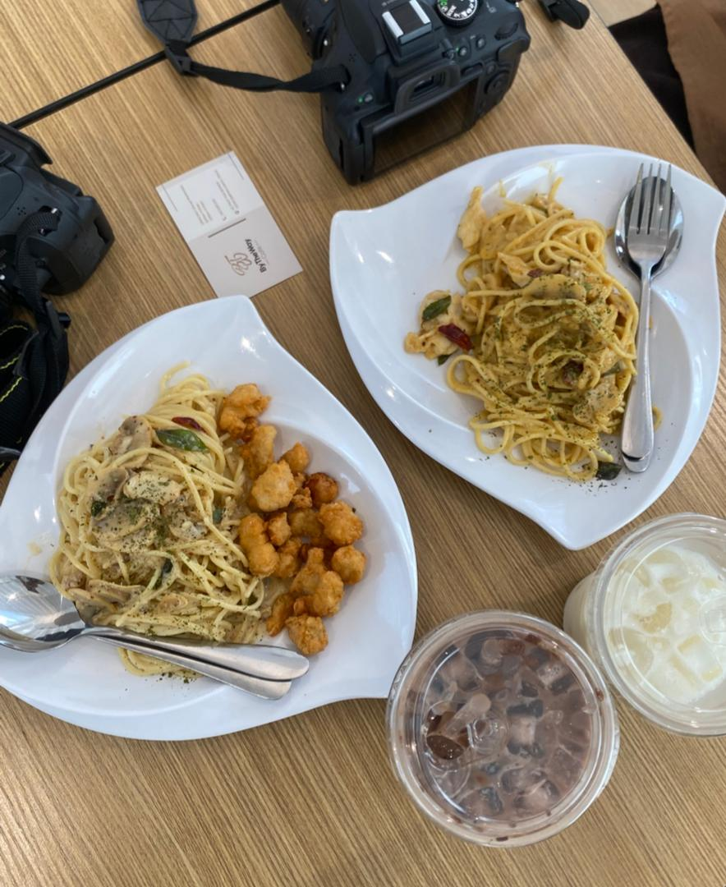

About Thow Ren Ning
Thow Ren Ning, 35years old, is a passionate and creative young woman from Perlis. As the second daughter in her family, she plays an important role in supporting her family’s business She has a strong interest in business, marketing, and branding. With her creativity and modern ideas, she decided to open her own café, By The Way Café, where she can express her passion for food and entrepreneurship. Her journey started by helping her father in the family business. Over time, she gained experience in handling customers, managing products, and promoting the business through social media.
Photo Gallery of Her family’s business



